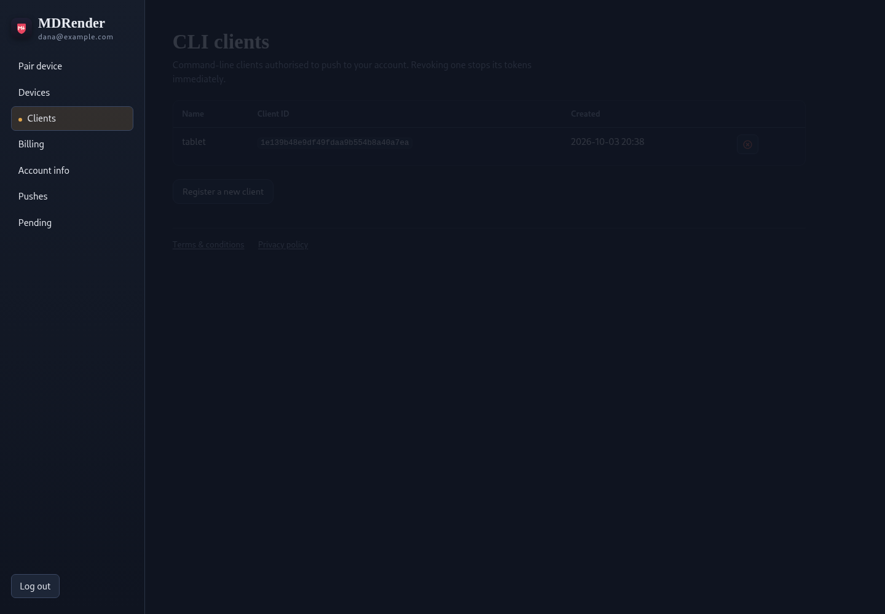

Push from any machine you own.
mdrender-send is the desktop and script client for
MDRender. On its own it talks straight to your phone over the network — no
server, no account. Enrol it once with a server you host and the same command
reaches the phone from anywhere — the server holds the files end-to-end
encrypted, and the cloud push master delivers only a wake-up ping once
the server has registered with it. No data leaves your server.

Every platform, one release
Each release attaches all the client packages to the same GitHub Release as the APK and the server image — pick your machine.
- Linux
- A standalone binary plus
.deb,.rpm, and Alpine.apkpackages built with nfpm, and a native.pkg.tar.zstfor Arch's pacman — each installs bothmdrender-sendandmdrender-push. - Windows
- An
.exeinstaller built with Inno Setup. - macOS
- A signed
.pkginstaller (Developer ID, notarisation-friendly) installingmdrender-sendandmdrender-push.
Prefer the source? The client is a single dependency-free Python
file at tools/localsend-send/localsend-send.py — Python 3.8+ runs it as
-is; encrypted servers additionally want the cryptography package, which
every packaged build already declares.
Without a server: direct on the network
The phone runs a LocalSend server; the client finds it or you point it at the IP. Nothing else is involved — this works fully offline.
# send to a receiver that requires PIN 1964
mdrender-send --host 10.0.1.226 --pin 1964 notes.md photo.jpg
# into a subfolder, renaming on name conflicts
mdrender-send --host 10.0.1.226 --pin 1964 --folder "Tax/2025" receipts.pdf
# skip files that already exist on the phone
mdrender-send --host 10.0.1.226 --pin 1964 --conflict skip *.jpgWith your server: push from anywhere
Enrol the machine once — the server hands you a verification link or a
six-character code, and the client stores its credentials in
~/.config/mdrender/push-credentials.json. After that, targeting a
device by name tries the LAN first and falls back to your server, so the same
script works at home and on the road. On an encryption-enabled server the
payload is sealed to the phone before it ever leaves your machine. Pick a
server that has registered with the master — that is who sends the
notifications.
The server's Clients page lists every enrolled client with revoke buttons, and can mint a new enrolment for you.
# one-time enrolment against your server
mdrender-send --enrol --server https://push.example.com
# list the devices you may send to
mdrender-send --list
# LAN first, cloud fallback — same command anywhere
mdrender-send --name "Pixel" report.pdf build.logFrom a cron job or CI
Anything that can read the credentials file can push: the
HTTP API is a client-credentials token plus one POST, and the packages ship a
shell helper that does exactly that — mdrender-push (cloud push
only, no LAN step).
# installed by the Linux/macOS packages
# (tools/push-to-phone.sh in the repository)
mdrender-push --target "Pixel" report.pdf# or the two calls yourself — client_id, client_secret and the
# server URL all come from the enrolment file
CREDS=~/.config/mdrender/push-credentials.json
URL=$(jq -r .server_url "$CREDS")
TOKEN=$(curl -s -d grant_type=client_credentials \
-d "client_id=$(jq -r .client_id "$CREDS")" \
-d "client_secret=$(jq -r .client_secret "$CREDS")" \
"$URL/oauth/token" | jq -r .access_token)
curl -H "Authorization: Bearer $TOKEN" \
-F target_device=Pixel \
-F file=@report.pdf \
"$URL/api/push"Both raw paths — this curl example and
mdrender-push — send plaintext payloads: on a server with
encryption required they're refused, and the wrapper points you at
mdrender-send --cloud, which seals each file to the phone first.